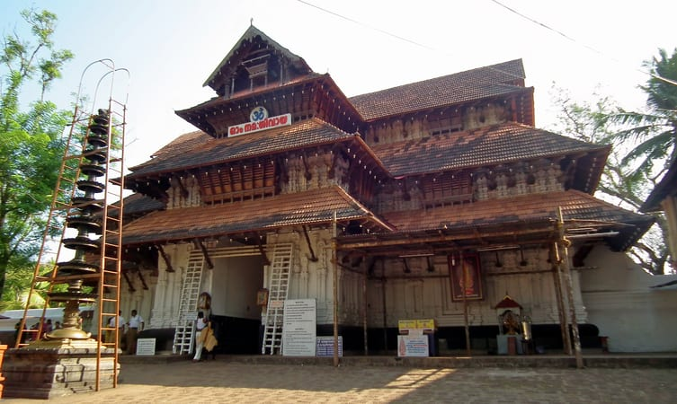

Places to visit in Palakkad are Ottapalam, Parambikulam Wildlife Sanctuary, Vadakkanthara Temple, Palakkad Fort, Kanjirapuzha, Dhoni Waterfalls, Malampuzha Garden, Malampuzha Dam, Meenvallam Waterfalls, Jain Temple, Thiruvalathur Randu Moorthy Temple, Rock Garden, and many more.
Situated in the foothills of Nilgiri, tourist places to visit in palakkad are filled with ancient architectures and natural wonders. Whether we are looking to spend some time alone, with friends or with family, this place offers you ample options to choose from and have the time of our life. From seeking blessings at the Jain temple of Jainimedu to wandering within the exotic wildlife of Silent valley National Park, it would not be wrong to say that there are many amazing places to visit in Palakkad.
Apart from historical structures and natural beauty, Palakkad has so much for your little ones too. If planning a family trip, places like Fantasy Park and Meenkara Dam will surely offer us a day filled with fun and enjoyment.If you are a nature lover and want to make the most of the beauty of the wilds, then a trip to Ottapalam and Meenvallam Waterfalls should be a big yes. Located at the Western Ghats these are among one of the best tourist places in Palakkad.
One of the most historically important Palakkad tourist places is the Palakkad fort or Tipu’s fort. Spend a day celebrating picnic in the sprawling green grounds of the fort with your family and enjoy looking at the various statues in the complex.
Or go for a morning or evening jog on the running track running along the moat surrounding the fort. History aficionados can spend a few hours enjoying the museum located within the grounds admiring the renovation of the fort by Archaeological Survey of India.Architecture buffs are attracted to the fort for its beautiful French style construction.

The beautifully designed gardens of Malampuzha are one of the most attractive Palakkad tourist places. Lush green lawns that are paired with well laid out flower beds full of vibrant and bright colours, the abundance of majestic fountains and artistically designed sculptures make for an idyllic escape from city life.
The pollution fee environs will make it impossible for you to leave the place. The gardens also feature gorgeous swimming pools where you can go for a leisurely swim. The canal that runs through the centre of the gardens lends a surreal quality to the place.
Known for its eerie silence that will make you hear and see things you are not sure of, The Silent Valley National Park is one of the most curious Palakkad tourist places.
The untouched environs of the valley attract tourists every year to witness the cicadas rustling with the wind. The valley is an epitome of tranquillity and stands to provide a perfect escape from the humdrum of concrete jungles and everyday city life. The diverse flora and fauna and booming ecosystem make it a truly idyllic holiday destination.

Just 2 kms from Palakkad railway station is the beautiful temple of Vadakkanthara, one of the most important Palakkad tourist places. The temple complex is dedicated to the worship of Devi, a revered form of Kannagi.It holds a special place in the hearts of Hindu devotees and followers of the Devi. The Pooja time is considered extremely sacred and the temple complex is thronged by tourists whenever the aarti is held.
At the end of the aarti, in the evening, gorgeous fireworks are set as per tradition. The building itself is beautifully and intricately decorated with captivating wooden carvings and is a sight to behold.
Protected by magnificently decorated huge stone walls and featuring two goddesses as its presiding deity, the Thiruvalathur Randu Moorthy Temple is the sight to behold and one of the most unique Palakkad tourist places.
The temple complex also features roofs clad with beautiful copper sheathing that glimmer in the moonlight and lend a surreal quality to the entire complex.